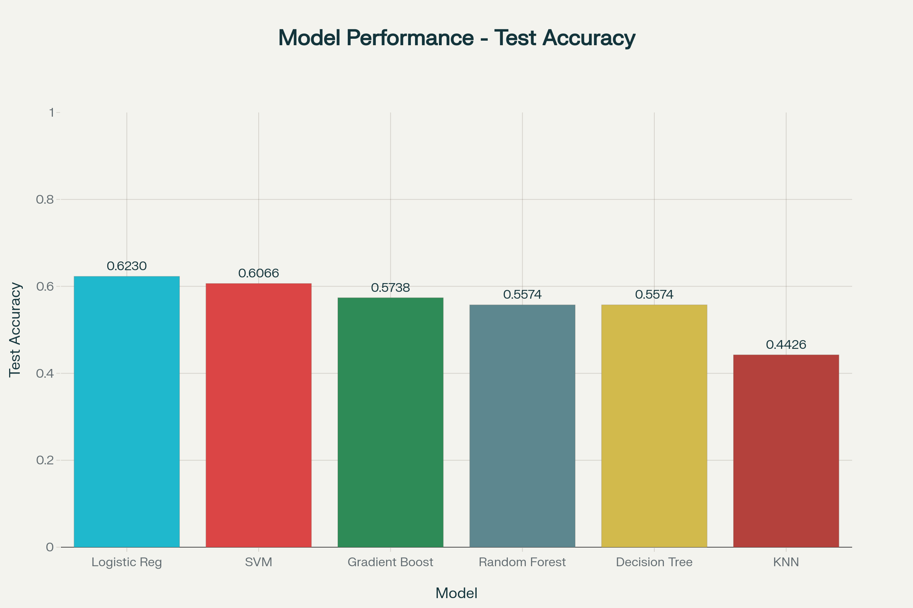

Patient Health Parameters
Analyzing health parameters...
Prediction Results
HIGH RISK
Confidence: 85%
Based on the provided health parameters, the model indicates a moderate to high risk of heart disease.
💡 Personalized Health Recommendations
Dietary Changes
- Reduce sodium intake to less than 2,300mg per day
- Increase consumption of fruits, vegetables, and whole grains
- Choose lean proteins like fish, poultry, and legumes
- Limit saturated fats and trans fats
- Eat foods rich in omega-3 fatty acids (salmon, walnuts)
- Monitor portion sizes to maintain healthy weight
Physical Activity
- Aim for 150 minutes of moderate aerobic exercise weekly
- Include strength training exercises 2 days per week
- Start slowly and gradually increase intensity
- Take regular breaks from sitting every hour
- Try activities like walking, swimming, or cycling
- Consult your doctor before starting new exercise routines
Medical Management
- Schedule regular checkups with your healthcare provider
- Monitor blood pressure and cholesterol regularly
- Take prescribed medications as directed
- Keep track of your blood sugar levels if diabetic
- Discuss preventive medications with your doctor
- Get recommended health screenings on schedule
Lifestyle Modifications
- Quit smoking and avoid secondhand smoke
- Limit alcohol consumption (1 drink/day for women, 2 for men)
- Get 7-9 hours of quality sleep each night
- Practice stress management techniques (meditation, yoga)
- Maintain a healthy weight (BMI 18.5-24.9)
- Stay hydrated by drinking adequate water daily
When to Seek Medical Attention
- Call 911 immediately if you experience:
- Chest pain or pressure lasting more than a few minutes
- Pain spreading to arm, jaw, neck, or back
- Shortness of breath, especially with chest discomfort
- Sudden dizziness, nausea, or cold sweats
- Unusual fatigue or weakness
- Irregular or rapid heartbeat
Monitoring & Tracking
- Keep a health journal to track symptoms and progress
- Use apps or devices to monitor activity levels
- Record blood pressure readings at home
- Track your diet and calorie intake
- Note any unusual symptoms or side effects
- Share your health data with your healthcare provider
🎯 Your Action Plan
- Immediate: Schedule an appointment with your healthcare provider to discuss these results
- This Week: Start making one healthy dietary change and add 15 minutes of daily walking
- This Month: Begin monitoring your blood pressure and cholesterol levels
- Ongoing: Maintain a consistent exercise routine and healthy eating habits
- Regular: Get annual health screenings and follow-up appointments
📊 About This Tool
This AI-powered predictor uses advanced machine learning algorithms trained on the UCI Heart Disease Dataset containing 303 patient samples with 13 key health features.

Algorithms Evaluated:
- Logistic Regression (Best: 62.3% accuracy)
- Support Vector Machine
- Gradient Boosting
- Random Forest
- Decision Tree
- K-Nearest Neighbors
📖 How to Use
- Fill in all 13 health parameters accurately
- Ensure values are within the specified ranges
- Click "Predict Risk" to get instant analysis
- Review the risk assessment and probability scores
- Use "Reset Form" to make another prediction
⚠️ Important Disclaimer: This tool is for educational and informational purposes only. It should NOT be used as a substitute for professional medical advice, diagnosis, or treatment. Always consult with a qualified healthcare provider regarding any medical conditions or concerns.